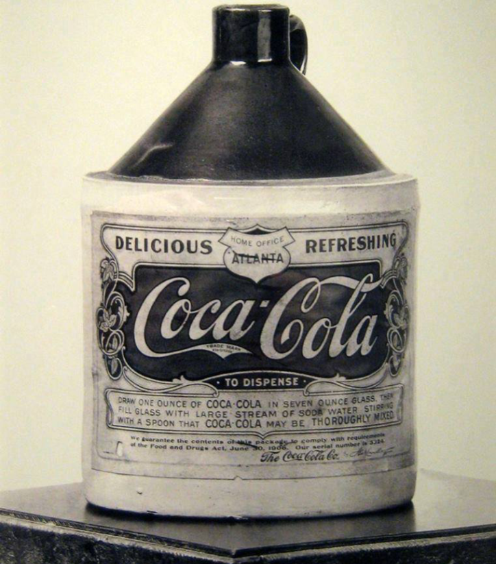

Le origini: tutto meno che buona
La Coca-Cola è stata inventata l'8 maggio 1886 ad Atlanta dal farmacista Dr. John Stith Pemberton come sciroppo medicinale. Nata come tonico per mal di testa e stanchezza, fu miscelata con acqua gassata presso la Farmacia Jacobs, venendo venduta per 5 centesimi a bicchiere. Il nome e il logo corsivo furono ideati dal contabile di Pemberton, Frank Robinson.
